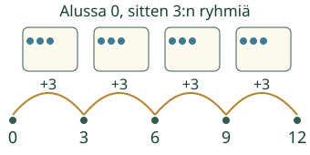
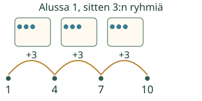

Loikan merkkipussit: lisää yksi samanlainen ryhmä. Miten luvut muuttuvat?
Näin ryhmät näkyvät luvuissa
Askel ja ryhmä kertovat samaa määrää

Sama askel, eri alku

Mieti: riittääkö sama väli kertomaan, että luvut ovat kolmen monikertoja?
Paljasta ajatus
Ei. Tarkista myös luvut nollasta rakentamalla.
Kokeile itse
Voit käyttää mallia tai ratkaista suoraan.
Kahden reitin yhteinen luku
Loikka etenee nollasta 2 kerrallaan, Aava 3 kerrallaan. Kirjoita kummankin luvut. Ensimmäinen yhteinen luku nollan jälkeen on 6: kolme kahden ryhmää ja kaksi kolmen ryhmää.12 on myös yhteinen, mutta ei ensimmäinen. Lähtönolla ei ole tässä kysytty uusi kohtaaminen.
Lopuksi: yhdessä lapasparissa on 2 lapasta. Miten jono 2, 4, 6, 8 näyttää sekä saman välin että kokonaisten parien määrän?
Opettajalle ja ilman ruutua
Luokat 1–2, integraationoodi. Vaadittu AND: M-NUM-EQUALSTEP-SEQ ja M-NUM-MULTIPLE-INTRO. Harjoitus yhdistää askeleen, seuraavan luvun, nollasta saavutettavuuden ja tarvittaessa kokonaisen ryhmämäärän. Yksi oikea vastaus tai mallin katsominen ei osoita näiden taitojen hallintaa tai pysyvää integraatiota.
Kokoa pöydälle saman kokoisia ryhmiä, kirjoita kertymät ja lisää erillinen alkumerkki vasta toisella kierroksella. Ryhmän kokoa ja ryhmien määrää ei vaihdeta huomaamatta. Malli käyttää 0 tai 1 alkumerkkiä, 2/3/4/5/10 ryhmäkokoa ja 0–4 ryhmää (enintään 41). Tehtävissä luvut enintään 20. Nolla voidaan muodostaa nollasta ryhmästä; kohtaamiskysymys rajaa sen erikseen pois. Ei aikarajaa, pakotettua ääneen nimeämistä tai oppilashistoriaa.